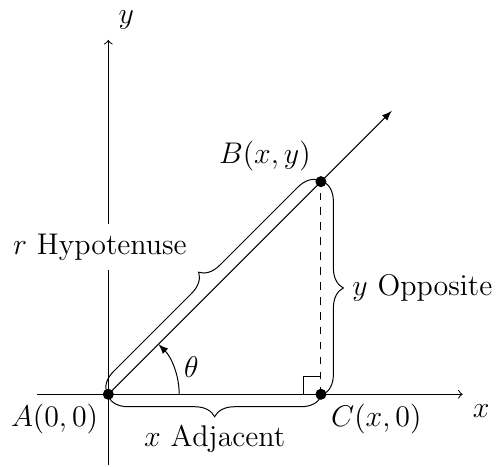
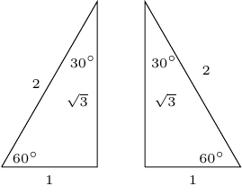
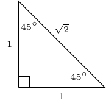

Section 2.1
Given the following triangle, we have the right-triangle-based definition of trigonometric functions.

Definition 5
Let \(A\) represent any acute angle in standard position. Then
Theorem 4 (Cofunction Identities)
Let \(\theta\) represent any acute angle. Then the following hold true:
The following is a \(30^{\circ}\) - \(60^{\circ}\) - \(90^{\circ}\) right triangle which will be used to define the following:

The following is a \(45^{\circ}\) - \(45^{\circ}\) - \(90^{\circ}\) right triangle which will be used to define the following:

Therefore, from last chapter and this section we have the following:
\(\theta\) |
\(\cos(\theta)\) |
\(\sin(\theta)\) |
|---|---|---|
\(0^{\circ}\) |
\(1\) |
\(0\) |
\(30^{\circ}\) |
\(\frac{\sqrt{3}}{2}\) |
\(\frac{1}{2}\) |
\(45^{\circ}\) |
\(\frac{\sqrt{2}}{2}\) |
\(\frac{\sqrt{2}}{2}\) |
\(60^{\circ}\) |
\(\frac{1}{2}\) |
\(\frac{\sqrt{3}}{2}\) |
\(90^{\circ}\) |
\(0\) |
\(1\) |
Using the reciprocal and quotient identities we know know the values of all six trig functions at 0, 30,45, 60, and 90 degrees.